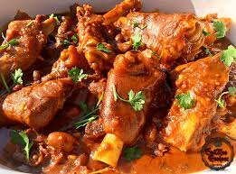

Trotters and Beans Curry

Savor the symphony of flavors in every bite – a culinary masterpiece, Trotters and Beans Curry
Prepare to elevate your culinary skills with this exquisite Trotters and Beans Curry recipe.
Begin by tenderly simmering fresh trotters in a fragrant blend of spices, allowing their rich
flavors to infuse into the broth. As the trotters reach a state of sublime tenderness, introduce
a medley of vibrant beans into the pot, each variety contributing its unique texture and taste to
the ensemble.
Allow the curry to dance on your taste buds as it simmers to perfection, creating
a symphony of flavors that meld together in a delightful crescendo. The slow-cooking process
ensures that the trotters are imbued with an irresistible tenderness, while the beans soak up
the aromatic essence of the curry. Garnish with fresh herbs for a final touch of vibrancy, and
serve this culinary masterpiece to embark on a gastronomic adventure that promises a delightful
fusion of tradition and innovation. Each spoonful is a journey into the heart of a comforting
and deeply satisfying culinary experience.
Ingredients:
- trotters, cleaned and prepared
- 1 cup assorted beans (kidney beans, black-eyed peas, chickpeas, or your choice)
- 1 large onion, finely chopped
- 3 tomatoes, diced
- 4 cloves garlic, minced
- 1-inch piece of ginger, grated
- 2 green chilies, finely chopped (adjust according to spice preference)
- 1 teaspoon cumin seeds
- 1 teaspoon coriander powder
- 1 teaspoon turmeric powder
- 1 teaspoon red chili powder (adjust to taste)
- 1 teaspoon garam masala
- Salt to taste
- 2 tablespoons cooking oil
- Fresh coriander leaves for garnish
For the Spice Blend (Masala):
- 1 cinnamon stick
- 4 green cardamom pods
- 4 cloves
- 1 bay leaf
Steps:
- Prepare Ingredients - Gather and prepare all the ingredients as listed in the recipe.
- Clean and Prepare Trotters - Ensure the trotters are cleaned thoroughly. You may need
to blanch them in hot water for a few minutes to remove any impurities. Cut them into
manageable pieces if necessary.
- Soak Beans (if needed) - If you're using dried beans, soak them overnight or according
to the package instructions. Drain and rinse before using
- Create Spice Blend (Masala) - In a small grinder, blend the cinnamon stick, green
cardamom pods, cloves, and bay leaf into a fine powder. Set aside.
- Cook Trotters - In a large pot, heat oil over medium heat. Add cumin seeds and let them
splutter. Add chopped onions and sauté until golden brown. Add minced garlic, grated ginger,
and green chilies. Sauté for a couple of minutes until the raw smell disappears.
- Add Spices - Add coriander powder, turmeric powder, red chili powder, and the prepared
spice blend (masala). Mix well to coat the onions and spices evenly.
- Add Tomatoes - Add diced tomatoes and cook until they soften and the oil starts to
separate from the masala.
- Cook Trotters and Beans - Add the cleaned trotters to the pot and cook for a few minutes,
allowing them to absorb the flavors. Then, add the soaked and drained beans. Mix well.
- Add Water and Simmer - Pour in enough water to cover the trotters and beans. Season
with salt. Bring the mixture to a boil, then reduce the heat to a simmer. Cover and
cook until the trotters and beans are tender. This may take 1-2 hours, depending on
the meat's tenderness and the type of beans used.
- Garnish and Serve - Once the trotters and beans are cooked to perfection, sprinkle
garam masala and garnish with fresh coriander leaves. Adjust salt and spice levels
according to taste. Serve hot with rice or your choice of bread.